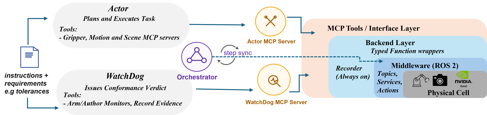
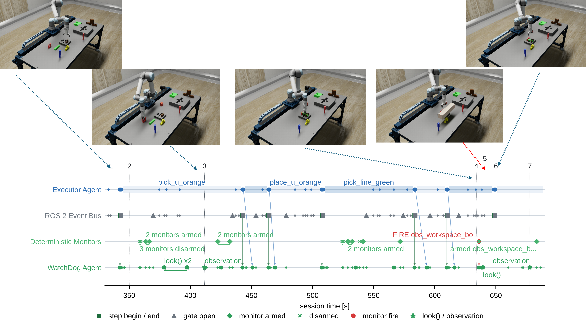

Agentic robotic systems built on language and vision language models now plan and execute long horizon manipulation tasks, but none is fully reliable. A single agent that plans, acts, and verifies can only trust its own controller's report of success or check its work after the damage is done, and a gap in its reasoning propagates into the checks it writes for itself. We present WatchDog, an independent supervisory agent that runs in parallel with the executing agent, with its own sensing, tools, and duty cycle. WatchDog arms monitors from a small library of primitives or writes new ones, binds each to a clause of a task contract, and judges conformance from multimodal physical evidence rather than from what the executor reports.
We evaluate it in a simulated robotic assembly cell over 108 scored runs spanning four monitoring arrangements and four violation classes. A separate WatchDog arms over 90% of the checks a task requires, against 66.4% when the executor monitors itself. When the executor's own specification is wrong, a separate agent catches the violation in 9 of 9 runs against 1 of 3 without one. Raising the monitoring model and its reasoning effort closes the coverage gap but not the independence gap, and monitoring in parallel costs less wall clock time than monitoring serially.
A separate agent arms more of the task.
Arming coverage is 90.3 to 92.7% with WatchDog (S1 to S3), against 66.4% when the executor monitors itself (S4).
Independence catches a wrong specification.
When the executor's specification is corrupted (Class 4), a separate WatchDog catches the violation at the step where it occurs in 9 of 9 runs, against 1 of 3 without one.
A stronger model closes coverage, not independence.
Moving the monitor from Sonnet 5 low effort to Opus 5.5 medium effort raises self monitoring coverage to 99.8%, but its fault recall stays at 85.7% against 100% for a separate WatchDog.
Parallel monitoring is faster.
The scenario with no WatchDog is the slowest: 609.3 s median run time against 517.3 s for S1, because the executor spends serially what the separate agent spends in parallel.


Before the executor may begin a step, the orchestrator waits for WatchDog to confirm its monitors are armed. WatchDog arms monitors from a library of three families (relative frame, stationarity, effort event) or writes new monitor code, and every monitor traces back to a clause of the task contract, with thresholds taken from the instruction or the per object registry. Between wake points WatchDog sits idle: it reasons only when a step is announced, a monitor fires, a step ends, or a timeout occurs, never on a fixed polling interval.
Pick a run, then click any event in the log to jump the video there. Playback speed varies, so each event shows both its video time and its real session time.
Select an event to see its details.
108 scored runs in Isaac Sim with ROS 2 Jazzy, MoveIt 2, a UR5e arm and an OnRobot RG2 gripper, on an assembly from the FMB benchmark. Scenarios: S1, WatchDog arms library monitors only; S2, library or authored monitors; S3, authored monitors only; S4, no WatchDog, the executor monitors itself. Classes: 1 clean, 2 nonconforming, 3 conforming with an unspecified extra step, 4 wrong executor specification.
| Metric | S1 library | S2 both | S3 authored | S4 no WatchDog |
|---|---|---|---|---|
| Runs | 23 | 23 | 23 | 23 |
| Arming coverage | 2296/2478 (92.7%) | 2236/2414 (92.6%) | 2370/2626 (90.3%) | 1809/2726 (66.4%) |
| Grasp retention | 169/174 (97.1%) | 158/164 (96.3%) | 107/178 (60.1%) | 113/188 (60.1%) |
| Parameter accuracy | 333/383 (86.9%) | 334/350 (95.4%) | 334/339 (98.5%) | 233/240 (97.1%) |
| Verdict correctness | 22/23 (95.7%) | 19/23 (82.6%) | 22/23 (95.7%) | 18/23 (78.3%) |
| Fault recall | 33/36 (91.7%) | 33/33 (100%) | 25/33 (75.8%) | 29/49 (59.2%) |
| Fault precision | 33/37 (89.2%) | 33/33 (100%) | 25/26 (96.2%) | 29/36 (80.6%) |
| False alarm rate | 0/9 (0%) | 0/9 (0%) | 0/13 (0%) | 2/10 (20.0%) |
Each cell gives the raw count and its percentage. Parameter accuracy is monitor provenance against the registry for S1 and S2, and authored parameter accuracy for S3 and S4; the two share a row but are never pooled. Metrics are pooled by summing numerators and denominators across runs.
| Metric | S1 | S2 | S3 | S4 |
|---|---|---|---|---|
| Runs | 3 | 3 | 3 | 3 |
| Step level fault caught | 3/3 | 3/3 | 3/3 | 1/3 |
| Verdict correctness | 2/3 | 0/3 | 2/3 | 1/3 |
| Detected, misadjudicated | 1 | 3 | 1 | 0 |
| Never detected | 0 | 0 | 0 | 2 |
Step level fault caught counts runs in which at least one true violation was flagged at the step where it occurred. With a separate WatchDog every missed verdict was detected and then wrongly judged recovered; without one, the fault was never detected.
| Condition | Runs | Obs. | Engaged (%) | Detected (%) | Spurious (%) |
|---|---|---|---|---|---|
| S1 | 23 | 19 | 78.9 | 0.0 | n/a |
| S2 | 23 | 18 | 55.6 | 0.0 | 100.0 |
| S3 | 23 | 22 | 95.5 | 0.0 | 98.6 |
| S4 | 23 | 22 | 95.5 | 0.0 | 100.0 |
| S3 Opus low | 6 | 6 | 100.0 | 55.6 | 100.0 |
| S3 Opus medium | 5 | 5 | 100.0 | 90.0 | 50.0 |
| S4 Opus medium | 5 | 5 | 100.0 | 100.0 | 78.9 |
| Scripted oracle | 2 | 2 | 100.0 | 100.0 | 40.9 |
Obs. is the number of runs carrying a scene episode. Engaged is the share of runs in which the agent looked or armed an observation monitor; detected, the share of detectable episodes it reported; spurious, the share of observation monitor fires that were false. The oracle is a script, not an agent, included to show the episodes were detectable.
| Metric | S3 Sonnet low | S3 Opus low | S3 Opus medium | S4 Sonnet low* | S4 Opus medium* |
|---|---|---|---|---|---|
| Runs | 15 | 6 | 5 | 15 | 5 |
| Arming coverage | 1436/1611 (89.1%) | 641/667 (96.1%) | 613/616 (99.5%) | 1191/1740 (68.4%) | 503/504 (99.8%) |
| Grasp retention | 71/108 (65.7%) | 46/46 (100%) | 40/40 (100%) | 80/120 (66.7%) | 36/36 (100%) |
| Parameter accuracy | 218/223 (97.8%) | 64/64 (100%) | 86/86 (100%) | 166/171 (97.1%) | 90/90 (100%) |
| Verdict correctness | 15/15 (100%) | 6/6 (100%) | 5/5 (100%) | 13/15 (86.7%) | 5/5 (100%) |
| Fault recall | 14/21 (66.7%) | 4/4 (100%) | 9/9 (100%) | 23/35 (65.7%) | 12/14 (85.7%) |
| Fault precision | 14/15 (93.3%) | 4/4 (100%) | 9/9 (100%) | 23/29 (79.3%) | 12/14 (85.7%) |
| False alarm rate | 0/10 (0%) | 0/5 (0%) | 0/4 (0%) | 2/8 (25.0%) | 0/2 (0%) |
| Executor output tokens per run | 58.0k | 55.7k | 55.6k | 145.5k | 273.1k |
| WatchDog output tokens per run | 151.3k | 83.0k | 219.5k | n/a | n/a |
* In S4 the executor is its own monitor, so the model shown is the executor's. Token counts are each agent's own output tokens per run, excluding cached input.
The gate blocks the executor for 23.8 to 33.9% of run time while WatchDog arms its monitors, yet the scenario with no gate is the slowest: 609.3 s median against 517.3 s for S1, and 748.5 s for S4 against 692.8 s for S3 at higher capability. A monitor fire reaches a separate WatchDog in under a second, and under 5 ms once the agent is waiting on it, while the self monitoring executor takes 32.9 s at Sonnet low effort and 6.1 s at Opus medium effort, because it cannot check until its current skill call returns.
@inproceedings{nasr2027watchdog,
title = {WatchDog: Physically Grounded Conformance Monitoring for Agentic Robotic Systems},
author = {Nasr, Mohammad and Starly, Binil},
booktitle = {[PLACEHOLDER] Venue},
year = {2027}
}